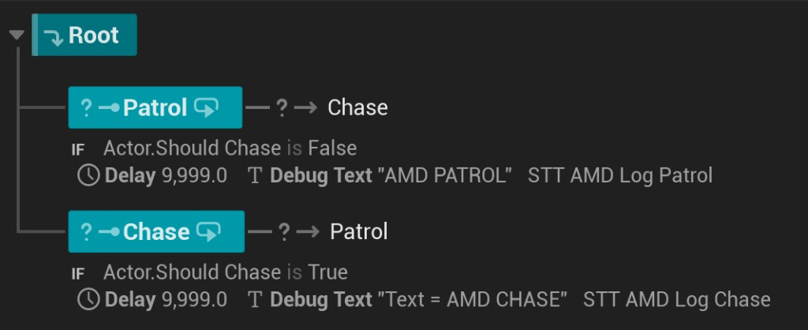

Team 9 · AMD
Advanced NPCs. Four kinds of NPC that Schola could not express,
DELIVERABLE 04 FINAL MVP
Adaptive · Background · Shared Policy · Event November 2026
Introduce the team and the four NPC types in one sentence. Hand straight to the context slide.
Context
Schola runs one trained policy,
AMD Schola connects Unreal Engine games to reinforcement learning: train in Python, then run the model in the game. Four kinds of NPC that game developers asked for don't fit that model.
Adaptive Keeps learning from the player after the game ships.
Background Thousands of agents deciding within one frame budget.
Shared Policy One network serving NPCs in different roles.
Event Decides only when something happens in the game.
Who it is for Unreal developers and ML engineers who build NPCs with Schola.
Schola is AMD's open-source Unreal plugin. Its existing loop trains a policy in Python over gRPC, exports ONNX, and runs one synchronous decision per agent per tick on the game thread. Each card is a need that loop can't serve: learning after training ends, scale within a frame budget, sharing one network across roles, and deciding only on events. These are the D1 user stories, unchanged.
Scope
What Schola had, and what we added
Existing Schola capabilities and what this project added
Area Already in Schola Built by this project
Learning Python training over gRPC (SB3, RLlib), then a frozen ONNX model SAC, TD3 and PPO learning inside the running game, in C++, with no Python process Scheduling Synchronous Think per agent on the game thread Batched inference on worker threads for Actors and Mass entities; event-triggered decisions Model structure One ONNX policy per agent type One shared network with role-specific heads; five designs benchmarked for latency and correctness Proof Unreal automation tests Example games, benchmarks, adaptation experiments, and learner tests that run in CI without Unreal
The rubric checks that we separate our work from the partner's product. Left column is Schola as AMD shipped it; right column is ours. Agents, policies, steppers, spaces and the NNE runtime are Schola's. Every NPC type we built plugs into those existing interfaces rather than replacing them.
Demo.
Four user flows, from the developer's side, live.
Adaptive · Background · Shared Policy · Event
Say what the audience will see: one flow per NPC type, each from the developer's perspective. Keep each to its budget.
Advanced NPCs for AMD Schola
Adaptive.
Adaptive NPCs · Deliverable 4
TEAM MEMBERS Jace Mu Jason Panusopone Chloe Lee Olivia Markow
Introduce the Adaptive team, Jace Mu, Jason Panusopone, Chloe Lee and Olivia Markow, in one sentence, then go straight into what changed for developers.
Adaptive NPCs
An NPC that keeps learning
Before
Train in Python
Export a fixed model
Ship it. It never changes.
Now
Learner inside the plugin
Improves while the game runs
Never holds up a frame
Adapts to each player
Learns as a group
SAC, TD3 or PPO
Save and freeze
Set up the demo in plain terms.
Before (Schola as AMD shipped it): an NPC is trained in a separate Python program, exported as a fixed model file, and shipped. It plays the same way forever. If players find a pattern it can't handle, it keeps failing until developers retrain and patch.
Now: we put a learning library, RLtools, inside the plugin in C++. No Python, no second process. Each NPC acts, gets a reward for how it went, and improves while the game runs. Training runs on background threads, so it never holds up a frame.
Bottom row, what a developer can now do: NPCs adapt when a player changes strategy; a squad can pool its experience into one shared learner; pick SAC, TD3 or PPO at any input and output size; save what an NPC learned, freeze learning, or keep a frozen copy to compare.
Then: "Here is what that looks like."
User flow 1
A chaser that adapts mid-game
The developer writes
1. What it sees
2. What it can do
3. Its reward
4. When a round ends
In Unreal
L Freeze learning
1-6 Switch automatic runner pattern
Tab Player-controlled runner (WASD)
L Learning back on
Setup, before the talk: open Examples/NativeLearning in Unreal 5.8 and press Play. Press F until the HUD says 12x/TICK, press 4 for the right-turn runner, and leave it running for a few minutes so it is already catching most rounds. Check the HUD says LEARNING: ON. Switch to the editor when you reach this slide.
Say: "This is the plugin's learner running inside Unreal. Nothing else is running, no Python. Red is the chaser, our adaptive NPC. Green is the runner, on a right-turn habit. The panel shows the catch rate over the last 20 rounds, and how many training updates it has done."
[Press L] "First, I freeze learning. This is what a shipped model is today."
[Press 6] "Now the runner flees to the corners instead. The catch rate drops, and it stays down, because nothing is learning."
[Press L] "Same NPC, same running game. I turn learning back on." Wait for the catch rate to climb. "It's working out the new runner while we watch."
Left column, one sentence: "Those four things are all a developer writes: what it sees is both positions and speeds, its reward is closing in plus a catch bonus. The plugin does the rest." The keys on the right are the ones you press, in order.
If it hasn't recovered by the end of the minute: say it usually takes 4,000 to 14,000 moves, and that the full controlled run is coming up in the technical section. Don't wait on it. If the editor fails, go straight to that evidence chart.
Background NPC Team
Max Xu
I’m Max Xu. I worked on ScholaMass and CampusCrowd.
Why ScholaMass?
Schola ran ONNX inference one agent at a time on the game thread.
Unreal Mass stores crowd state in entity fragments. Model calls for thousands of NPCs compete for the frame budget.
ScholaMass connects Mass (from unreal) processors to batched inference and routes each result back to its entity.
Max Xu. Schola already supplied ONNX inference. Our background scheduler moves model calls to workers. ScholaMass is the adapter that gathers rows from Mass fragments, submits them to that scheduler, and applies results to the right entities on a later frame.
CampusCrowd
Four students · Full day
100,000 students · First class
CampusCrowd benchmarks measured separately from the videos
Students Mode Rows/call Turns/s Game-thread inference p99 Turn latency p99 FPS
100,000 ScholaMass 45.9 3,310 1.729 25 59.49 100,000 Synchronous 1.0 3,276 4.741 10 55.06 300,000 ScholaMass 54.5 9,665 4.440 35 54.09 300,000 Synchronous 1.0 9,646 13.226 27 38.30
Both videos last 30 seconds. They can play side by side while you narrate. The left shows a full class day sped up and the right shows the first class for the large cohort. The table compares ScholaMass and synchronous inference at each crowd size. The 100,000-student pair was rendered; the 300,000-student pair ran headless. Compare modes within each crowd size. At 300,000, both modes applied about 9,650 turns per second with no dropped rows.
ScholaMass architecture
Gather Mass entities due to decide Queue One bucket per shared policy Infer Batched ONNX on workers Apply Return results on a later frame
Max Xu. Trace one student’s junction decision. Mass schedules tell the gather processor what is due. One world subsystem keeps a bounded queue for each policy bucket. Workers batch ONNX requests by policy. The bridge checks entity identity and request serial before it applies a completed action.
ScholaMass in CampusCrowd
const int32 Bucket = Service
? Service->AcquireBucket (*Provider, Definition,
Settings, BucketError)
: INDEX_NONE;
FScholaInferenceBucketFragment BucketFragment;
BucketFragment.BucketId = Bucket;
if (MigrationDay)
MigrationDay->WriteObservation (Agent.Instance, Row);
if (MigrationDay)
MigrationDay->ApplyAction (Agent.Instance, Row);
The highlighted calls are the API integration points. AcquireBucket binds the ONNX provider, input and output shapes, and scheduler settings. The crowd shares the bucket. The gather callback writes one row for each student due to decide. The apply callback passes the returned scores to CampusCrowd. The excerpts come from CrowdComparisonHost.cpp and CrowdProcessors.cpp.
Develop and deploy in Docker
Sign in to ghcr.io for the Unreal Engine image.
Reopen in Dev Container and run git lfs pull.
Run Scripts/build.sh and CAMPUS_EDITOR=1 Scripts/run.sh -Demo=Four.
Run Scripts/package.sh for a standalone Linux build.
The devcontainer uses Unreal Engine 5.8.4. Run the scripts from Examples/CampusCrowd. Use F1 for the four-student day, F2 for scaling, and Tab to compare inference modes. Headless tests run with -nullrhi. Package output is in Saved/Package/Linux.
Advanced NPCs for AMD Schola
Shared Policy.
Shared Policy NPCs · Deliverable 4
TEAM MEMBERS Clementine Yang Hiu Yan (Jaela) Kwok
Introduce the Shared Policy team, Clementine Yang and Hiu Yan (Jaela) Kwok, in one sentence, then go straight into the demo.
Clementine Yang · Runtime integration
From mock policy to real inference. PR #51 Merged
NNE-backed shared policy inference path
Three NPCs, bound to expert heads 0, 1 and 0, hand their observations to the Shared Policy Stepper. The stepper passes one batch to the NNE Shared Policy, which makes a single model call using Architecture A. The model produces an Expert 0 output and an Expert 1 output, and the policy selects and routes the matching action back to each NPC.
NPC 1 NPC 2 NPC 3 Expert 0 Expert 1 Expert 0 Shared Policy Stepper Collect observations and head bindings
NNE Shared Policy Architecture A · single batched model call
Expert 0 output Expert 1 output
Select and route actions back to NPCs
Integrating batched ONNX inference into our Shared Policy workflow.
6 / 6 Unreal automation tests passed
1 model call per batch, however many NPCs and roles are in it
Verified Inference outputs validated against Python ONNX Runtime
Pull request: github.com/csc301-2026-f/9-AMD-Advanced-NPCs/pull/51 · UNNESharedPolicy runs Architecture A through Unreal NNE
My contribution is PR #51, which replaces the mock shared policy with real inference. Walk the diagram top to bottom. Three NPCs are bound to expert heads: NPC 1 and NPC 3 use expert 0 and NPC 2 uses expert 1. The Shared Policy Stepper collects their observations and head bindings into one batch. UNNESharedPolicy then makes a single model call for the whole batch, using Architecture A, so both experts' outputs come back together. The policy selects the output that matches each NPC's bound head and routes that action back to the NPC. Verification: six Unreal automation tests pass, covering initialisation, mixed-head routing, reference outputs, rejecting invalid requests and unsupported models, and the stepper integration. Outputs are validated against Python ONNX Runtime.
Clementine Yang · Gameplay integration
Bringing Schola into Lyra.
Moving from isolated inference tests toward a real game environment.
01
Compatibility
Resolved UE 5.8 UObject pointer issues so Lyra builds with Schola.
PR #56
02
Reproducibility
Automated setup and build scripts for macOS ARM64.
PR #57
Result Successfully built and launched Lyra with Schola enabled.
To move beyond isolated inference tests, I also worked on integrating Schola into the Lyra Starter Game. I resolved Unreal Engine 5.8 compatibility issues, PR #56, and added automated setup and build scripts for macOS ARM64, PR #57, making the integration easier to reproduce. We successfully built and launched Lyra with Schola enabled.
Clementine Yang · StateTree integration
One StateTree, multiple NPCs. PR #67 Merged
Shared StateTree asset in Unreal Editor

One asset defines both states; each NPC runs its own instance.
Planned integration
Patrol Policy
Chase Policy
Architecture C · NNE Inference
Verified: Multiple StateTree instances and runtime Patrol ↔ Chase transitions.
PR #67 adds a StateTree-driven NPC demo in Lyra. The screenshot on the left is the shared StateTree asset in the Unreal Editor. It defines two states, Patrol and Chase, selected by the Actor's Should Chase value: Patrol while it is false, Chase while it is true. Each NPC runs its own instance of the asset. Several instances ran at once and switched between Patrol and Chase. Actor-specific logs are still needed to verify independent state selection. The dashed part is planned, not built: map each active state to its own specialized policy, Patrol Policy or Chase Policy, served through Architecture C with NNE inference.
Hiu Yan (Jaela) Kwok · Benchmarking
Per-role models reduced request latency. PR #55 Merged
Architecture A · Baseline One ONNX model evaluates every head in a single call. Its selected actions serve as the reference.
Architecture C · Integration target One model per active role. C matched A’s actions and reduced median request latency across all 64 tested configurations, with larger model files.
16 active heads · batch of 16 375 µs for A, 242 µs for C, measured end to end in Python ONNX Runtime on one Mac CPU.
In Demo 3, I benchmarked C and D, the two designs Alex from AMD asked us to focus on. This time, I compared C with our baseline, Architecture A. On a Mac CPU, C made the same decisions and was faster in every setup we tried. That’s why we’re moving forward with C.
Hiu Yan (Jaela) Kwok · Runtime implementation
Architecture C extends Schola’s inference runtime. PR #52 Merged
Architecture C routes mixed-role observations through separate ONNX models
The input order is NPC 1 Toward, NPC 2 Away, NPC 3 Toward. C groups NPCs 1 and 3 into the Toward batch and NPC 2 into the Away batch. Each batch runs one model call. C restores the action order to NPC 1, NPC 2, NPC 3.
Mixed-role observations
NPC 1 Toward · NPC 2 Away · NPC 3 Toward
Group by role
Toward model · 1 call
Batch: NPCs 1 and 3
Away model · 1 call
Batch: NPC 2
Restore action order: NPC 1 · NPC 2 · NPC 3
Architecture C · one ONNX model call per active role
One call per active role
Unreal NNE runs the matching ONNX model on each role batch.
One action per NPC
Architecture C restores the input order so the stepper can deliver each action to its NPC.
Same stepper API Developers configure a role-to-model mapping. The existing Shared Policy Stepper works with either architecture.
My merged implementation adds Architecture C to our Schola extension through the existing policy interface. Clementine integrated Architecture A first, and C is the version we plan to use going forward. At a high level, C takes a batch of observations from NPCs in different roles, runs one model per group, and sends each NPC its action.
Hiu Yan (Jaela) Kwok · Unreal gameplay verification
What the beacon demo verifies. PR #66 Unreal example
In the viewport Move the beacon with WASD. Three NPCs steer toward it and three steer away. Changing direction gives all six NPCs new observations.
In the Output Log LogSharedPolicyD4 reports six applied actions and two model calls per decision step. One call serves the Toward batch and the other serves the Away batch.
What ties them together The Shared Policy Stepper collects observations, submits them to Architecture C, and applies the returned action to each NPC.
Clementine and I put together two demos. First, I’ll show you the beacon scene I built and configured in Unreal. It shows Architecture C batching NPCs by role. All six NPCs make decisions in the same step, and Architecture C runs the model once for each group, so two model calls give us six steering actions.
From observations to steering in one step.
Hiu Yan (Jaela) Kwok · Unreal Runtime Demo · 00:47
Open the beacon demo recording
The stepper applies six steering actions from two model calls per decision step. PR #66
[Play the clip from around 0:15.] As I move the beacon, these three NPCs follow it, and the other three steer away. [Point to the log around 0:28.] You can see six steering actions from just two model calls, one for each group. [After the clip.] Next, Clementine will show NPCs switching between Patrol and Chase in Lyra, Epic’s sample game for Unreal Engine. That’s the piece we’ll connect to our shared policy next.
StateTree in action.
Clementine Yang · Lyra Runtime Demo · 00:33
Your browser can't play this video. The file is deliverables/D4/assets/statetree-runtime-demo.mp4.
Multiple NPC instances · Runtime state transitions
Press play and narrate over the clip; don't let it run silently. In Lyra, several NPCs each run their own instance of the shared StateTree, and you can see them switch between Patrol and Chase at runtime. Be clear about scope: this shows StateTree-driven state changes, not different neural policies yet. Mapping each state to its own policy through Architecture C is the next step. Fallback use: if the live Lyra run fails, this clip is the recording of the same build.
Roadmap · Towards D5
From inference to gameplay.
Connecting our inference framework with StateTree-driven NPC behavior.
Implemented Cube Demo Architecture C · real NNE inference
Implemented Lyra Demo StateTree · runtime transitions
→
01 Dynamic Policy Selection Map active states to specialized policies. 02 Runtime Batch Regrouping Group NPCs by their current policy. 03 End-to-End Gameplay Apply inference outputs to NPC behavior.
Goal D5 · Integrated Gameplay Demo
Implemented Planned
Further evaluation
Latency Memory & Storage Scalability
So far we have two working pieces. The Cube demo runs Architecture C with real NNE inference, and the Lyra demo runs StateTrees with runtime Patrol and Chase transitions. For D5 we connect them in three steps: first, dynamic policy selection, which maps each NPC's active state to a specialized policy; second, runtime batch regrouping, which groups NPCs by their current policy so each group still goes through one batched call; and third, end-to-end gameplay, applying the inference outputs to NPC behavior. The goal is an integrated gameplay demo in D5. We will also keep evaluating latency, memory and storage, and scalability. Solid boxes are done; dashed boxes are planned.
Advanced NPCs for AMD Schola
Event.
Event NPCs · Deliverable 4
Introduce the Event team, Prithvi Ajay, in one sentence, then go straight into the demo.
User flow 4 · Event-driven inference
NPCs decide only when needed.
The developer workflow
01
Configure NPC agents and their Schola policy.
02
Subscribe agents to relevant gameplay events.
03
Trigger inference on an event; change subscriptions at runtime.
Event NPCs
Six agents · Two gameplay events · Dynamic subscriptions
Watch for
Only subscribed agents execute policy decisions; unsubscribed agents no longer respond to that event.
How it works.
One shared architecture, then the key design decision behind each NPC type.
Architecture · evidence · quality
Architecture
Every NPC type is a new stepper or policy
Shared architecture of the four NPC types
Game code sits on top. Below it, three Schola layers: the stepper decides when, the policy decides how, and the execution layer decides where. Each NPC type adds a box in one or more layers.
Game code: agents observe and act
WHEN · stepper HOW · policy WHERE · execution
Adaptive Background Shared Policy Event
UAdaptiveStepper UBackgroundStepper USharedPolicyStepper UEventStepper
URLToolsNPCPolicy UNPCInferencePolicy UNNESharedPolicy any Schola policy
RLtools learner NNE workers Unreal NNE caller's thread
Schola IStepper Schola IPolicy Unreal / NNE
Built by this project Existing Schola or Unreal
Walk the diagram top to bottom once. Game code only implements agents. A stepper decides when NPCs decide, a policy decides how, and the bottom row is where the work runs. The key design choice: every NPC type is a new implementation of an existing Schola interface, so game code never touches RLtools, ONNX Runtime or worker threads, and the types compose. For example, the event stepper works with any policy. Each subteam's next slide zooms into its own column.
Adaptive NPCs · design
The game never waits for the learner
Adaptive NPC data flow
On the game thread, the stepper gets an action from the latest published policy and later submits the outcome. Outcomes go through a bounded queue to a worker, where RLtools trains and publishes a new immutable policy version that the next decision uses.
GAME THREAD WORKER THREAD
NPC
Adaptive stepper
Policy
Learner (C++)
New version
Latest version
outcome swap in action
Follow the arrows once. The stepper asks the policy for an action, and the policy answers immediately from the latest published snapshot, so a decision never waits for training. The outcome goes through a bounded queue to a worker, where RLtools trains and publishes a new immutable version. Trade-offs: (1) native execution means a new observation or action size needs a C++ rebuild, which configuration assets automate; (2) a decision may use a policy a few versions old, and every outcome carries its version so attribution stays correct. Learners are independent by default; NPCs can opt into one shared learner per group.
Adaptive NPCs
It adapts. Training is the only limit.
Catch rate after the runner switch, in Unreal The learner climbs from 0.13 to above 0.80 by about 10,000 moves. The frozen copy stays at 0.13.
0.0 0.2 0.4 0.6 0.8 1.0 0k 5k 10k 15k 20k
Moves after the runner switch
Catch rate
■ Learner■ FrozenIn Unreal on Windows, seed 1.
3 / 3 seeds recover in Unreal
5–11 µs per decision
60–90 NPCs per shared learner
Same test as the live demo, but controlled. Train on the right-turn runner, save a frozen copy, switch to the corner runner, keep learning. Green is the learner, orange the frozen copy. Both start low; only the learner climbs back. This ran inside Unreal on Windows (NativeLearning.ChaseAdaptation, seeds 1 to 3, all pass the D3 criteria; recovery at 9.6k to 13k moves). Right side: deciding costs microseconds per NPC, so the game never slows down. The limit is training speed: one shared learner keeps up with about 60 to 90 NPCs, then they still act but adapt more slowly. Scaling measured outside Unreal (SCALING.md). Honest limit: after recovering, the curve still dips at times.
Adaptive NPCs · checkpoints 1 of 3 · Chloe Lee
Saving and loading what an NPC learned
Once an NPC has learned something, you can save it and load it back later. There are 3 ways to save:
1 Model only for shipping an NPC that's already trained
2 Full learner to pause training and continue later
3 Full learner + its experience to pick up exactly where it stopped
This part is mine, checkpoints. You can save what an NPC has learned and load it back later. There are three modes. Model only, if you just want to ship a trained NPC. The full learner, so you can pause training and pick it up later. Or the full learner plus its stored experience, which resumes exactly where it left off. You can call it from Blueprint or C++, and the file work happens off the game thread.
Adaptive NPCs · checkpoints 2 of 3 · Chloe Lee
Making loading safe
The problem: RLtools crashes the whole program if you load a file that doesn't match. So before loading, we check the file in 5 steps:
Saved file
header size checksum profile structure
✓ All pass → we load it
✗ Any fail → we don't load, and the NPC keeps its current model
The tricky part was loading. RLtools just aborts the program if the file doesn't match what it expects. So before we give it the file, we check the header, the size, the checksum, the profile and the structure. If any of those fail, we don't load, and the NPC keeps its current model. For saving, we write to a temp file and rename it at the end, so a crash halfway through can't leave a broken file.
Adaptive NPCs · checkpoints 3 of 3 · Chloe Lee
Checking that it works
I tested it two ways: automated tests, and rerunning the chase test from a saved file.
460 tests run automatically on every PR
2 platforms: they run on both Linux and Mac
6 / 6 seeds: started from a saved file, the NPC still learned the new runner
0 changes: the frozen copy loaded from the same file stayed the same
For testing, there are 460 checks that run in CI on every PR, on Linux and Mac. That includes a bunch of broken and mismatched files, and all of them get rejected. I also reran the chase test starting from a saved checkpoint. It still adapts on all six seeds, and the frozen copy loaded from the same file doesn't change at all.
Adaptive NPCs · testing · Chloe Lee
Testing
I also worked on testing:
1 Speed A decision takes about 5 µs, so the game doesn't slow down.
2 Fair test We compare the learning NPC to a frozen copy.
3 Clear rules Pass or fail is decided before we run the test.
I also worked on testing. First, speed: a decision takes about five microseconds, so the game doesn't slow down. Second, to prove the NPC really adapts, we compare it to a frozen copy that doesn't learn. And third, we decide what counts as a pass before we run the test, so we can't fudge it afterwards.
Event NPCs · Design
Inference on demand.
Event-driven inference pipeline
A gameplay event selects subscribed agents.
The Event Stepper observes their state,
evaluates the policy and applies their actions.
PlayerTurnEnded
AlarmTriggered
Event subscriptions
Select matching agents
UEventStepper
Observe
Collect state
BatchedThink
Evaluate policy
Act
Apply actions
Only selected NPCs respond
Event integration
Existing Schola workflow
Runtime subscriptions
Subscribe or unsubscribe agents without changing their policy.
Verified in Unreal
Selective event routing, policy actions and dynamic unsubscription.
Trade-off
Inference runs on the caller's thread.
Key decision
Separate when inference happens from how Schola evaluates the policy.
Testing and packaging
Automated tests by component and where they run
Component Automated tests Runs
Adaptive learner 460 learner and checkpoint checks CI path-filteredChase simulator 7 smoke checks CI path-filteredAdaptive in Unreal Policy, stepper, world service Local script Chase demo Played on Windows Manual Background and Mass 43 Unreal tests plus Python navigation tests Devcontainer Shared Policy pytest; 48 NNE reports gated on correctness Local script
Docker development Unreal 5.8.4 devcontainer for editor builds, automation, and headless smoke tests.
Standalone Linux release Package and smoke-test a selected commit in Docker. Maintainers publish artifacts with the release tag.
Constraint GitHub Actions runs native checks. Docker provides the Unreal toolchain.
Distinguish the hosted native PR checks from the Unreal suites in Docker. The devcontainer pins the engine version for both development and release packaging. A maintainer selects the commit, runs the package smoke test, and uploads the Linux artifact.
Non-functional requirements
Fast, bounded and checked
Non-functional requirements, responses and evidence
Concern Response Measured
Frame budget Model calls and training run on workers; the game thread only gathers and applies CampusCrowd inference p99: 0.141 ms/frame for 1,600 students; adaptive decisions: 5–11 µs Bounded resources Fixed queue, row, byte and replay limits; overload is rejected and counted 8.6 MB per adaptive learner; zero dropped rows in both CampusCrowd captures Correctness Outcomes must match their decision; shared-policy results gated on an oracle Attribution tests; 48/48 NNE reports correct Reliability Atomic, validated checkpoints; teardown with work in flight is tested A failed load leaves the learner unchanged
These are the concerns that matter for a game runtime library: frame time, memory, correct results and safe failure. Scheduling is cooperative, so we make no hard real-time guarantee. The README’s Non-functional requirements section links the reports.
Accessing the product
How AMD gets, runs and maintains it
01 Get it Use the tagged plugin source or add Schola to an Unreal 5.8 project as Plugins/Schola.
02 Run it The Docker quick start covers the engine image, CampusCrowd build, and standalone Linux package. Chase demo: open NativeLearning, press Play.
03 Maintain it The maintainer guide covers repository layout, test commands, and extension points.
Handoff Merged main and the D4 release, plus a walkthrough of the maintainer guide with AMD.
Keep this short and point to the documents rather than reading them. Schola is a source-distributed plugin, so there is no hosted URL; the release is the product. Adaptive learning needs no Python service or downloaded model. At the end of term we hand over the merged repository, the tagged release and the maintainer guide, and walk AMD's team through it. Show how AMD can build from a checkout in the devcontainer and package the tagged version with the same engine. Close with who to contact for questions after the term and where open work is ranked (DEVELOPMENT.md, Open work).
If we did it again
What we would change, and why
Pick the stack from the shipping constraint We planned gRPC to a Python trainer. A shipped game can't carry one, so we moved to native C++ and rewrote the integration.
Partner need → tech stack → what we could test.
Fix the experiment before tuning A frozen-copy control and criteria fixed in advance exposed what learning curves hid: the inherited 60k replay buffer adapted too slowly.
Evaluation design → product default.
Make the core testable off-engine Course CI can't run Unreal, and several of us develop on macOS. An engine-free learner build put it in CI. We'd do it in week 1.
Platform → process → quality.
Measure latency and frame cost together Batching saved game-thread time, but students waited longer for turns. We would track the two metrics from the first playable build.
Runtime scheduling → player-visible behavior → benchmark.
Press Play early Tests passed. The first real run in Unreal still broke.
Headless tests → missed bugs → play it sooner.
Technical learnings score above process ones, and multi-dimensional thinking is what earns full marks, so name the chain on each card. 1: D1 planned gRPC to Python; the partner's need for learning in a shipped game made a separate Python process unacceptable, which drove the move to RLtools in C++. That change is also what made the learner testable without Unreal. 2: Without a frozen-copy control and fixed criteria we would have shipped chase_sim's 60k replay buffer; the controlled runs showed 2 of 3 seeds passing versus 6 of 6 at 10k. 3: Our Unreal C++ can only be verified on Windows, which slowed review. An engine-free build from the start would have put the numerics under CI from day one. Max: add request-to-action latency to the performance budget from the beginning. The higher p99 affects how long a student waits at a junction even when the frame rate is stable. 4 (adaptive, Unreal demo): the engine-free tests prove the maths, not the game. Building the playable chase demo on Windows found problems none of them could: modules that compiled but didn't link, an empty level with no light so everything rendered black, and a decision loop that halved the speed. We'd press Play in week 1.
Questions.
Four NPC types, one Schola architecture.
Answer directly and say "we didn't measure that" when it's true. Backup slides follow: adaptive per-seed results and references. Adaptive questions to expect: why SAC by default (continuous actions, replay makes it sample-efficient); why not keep Python (shipping and per-decision latency); what happens when training falls behind (NPCs keep acting on the latest policy; adaptation slows); how attribution works (each outcome carries session, agent, episode, decision and policy version).
Backup · chase adaptation on the plugin learner
Per-seed results by replay size
Chase adaptation results for each replay size
Replay Seeds passing 1–4 Recovery to 0.80 (moves) Failing seed After window: min · final
10k (shipped) 6 / 6 4,396 – 13,999 none 0.54–0.81 · 0.88–1.00 20k 5 / 6 7,668 – 17,473 seed 3: gap exactly 0.20 0.59–0.82 · 0.78–1.00 60k (chase_sim) 2 / 3 12,469 – 19,602 seed 3: gap 0.05 0.36–0.77 · 0.69–0.99
Criteria: ≥0.50 before the switch, ≤0.80 right after, ≥0.80 within 20,000 moves, frozen copy more than 0.20 below at 20,000 moves, on every seed. Source: Tools/ScholaRLToolsNative/CHASE-ADAPTATION.md.
Runs are deterministic; a second full run reproduced every CSV row. Seed 3 shares pre-switch training at 20k and 60k because the buffer never filled before the switch, and that snapshot already catches 0.72 on the new runner, which leaves little room for criterion 4.
References
Links are relative to the repository.